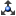

사용자 인터페이스는 문서 및 3D/2D의 두 작업 영역으로 구성됩니다. 각 작업 영역에는 아래에 설명된 자체 제어 요소가 있습니다. 사용자 인터페이스의 모양은 이 대화형 절차를 생성하는 데 사용된 정보 표준에 따라 다릅니다.
|
|
문서 윈도우에는 지정된 정보 표준에 따라 생성된 문서가 표시됩니다. 문서는 직원이 타스크를 수행할 수 있는 단계별 절차를 제공합니다. 절차 단계에는 일부 대화식 요소가 포함될 수 있습니다. 하이퍼링크를 클릭하여 3D 윈도우에서 현재 단계를 보거나 2D 윈도우에서 2D 이미지를 볼 수 있습니다.
| 버튼 | 설명 |
|---|---|
| 필터 | DITA 문서를 기반으로 절차에 대한 조건부 처리 속성으로 필터링합니다. S1000D 데이터 모듈을 기반으로 절차의 적용 가능성을 기준으로 필터링합니다. |
3D 윈도우는 문서 윈도우에 설명된 절차의 3D 표현을 제공합니다. 3D 윈도우에서 재생 바의 버튼을 사용하여 절차를 재생하고, 마우스를 사용하여 탐색할 수 있습니다. 3D 윈도우의 오른쪽 상단 모서리에 있는 로케이터(예: 축 삼각대)를 사용하여 단위 또는 파트의 공간 위치를 확인할 수 있습니다.
처음으로 절차를 열 때 3D 윈도우가 닫히면 문서 윈도우에서 해당 제어 요소를 클릭합니다.
3D 윈도우에서 절차 재생을 제어하기 위한 버튼입니다.
| 명령 | 목적 |
|---|---|
| 재생 | 중지 또는 일시 중지될 경우 절차의 재생을 시작합니다. |
| 일시 중지 | 현재 단계에서 재생을 중지합니다. |
| 이전 | 이전 단계로 복귀합니다. |
| 다음 | 절차를 다음 단계로 이동합니다. |
| 설정 |
설정 리스트를 표시하거나 숨깁니다.
속도. 재생 속도를 설정합니다. 시점 동결. 선택하면 카메라를 현재 뷰로 잠그므로 절차를 재생하는 동안 카메라의 이동이 방지됩니다. 원스텝 재생. 선택된 경우 현재 단계의 재생이 잠깁니다. 알림 메시지 비활성화. 선택된 경우 재생 중에 절차에 대한 알림을 알리는 메시지가 표시되지 않습니다. 인라인 주석 표시. 선택된 경우 절차 주석이 3D 윈도우에 표시됩니다. 장면 조명. 3D 윈도우에서 모델을 비출 광원의 수와 위치를 정의합니다. 광원의 상대 위치가 리스트의 오른쪽에 표시됩니다. 모든 광원이 뷰어와 함께 이동됩니다. 탐색 육면체를 표시합니다. 3D 윈도우에서 탐색 육면체를 표시하거나 숨깁니다. 탐색 육면체에는 세 가지 유형의 핫스팟 영역(모서리, 코너 및 면)이 있습니다. 탐색 육면체의 모서리, 코너 또는 면에 포인터를 놓으면 해당 영역이 강조 표시됩니다. 이러한 영역을 사용하여 표준 뷰 간에 전환하고 회전을 수행할 수 있습니다. 곡면 모서리 표시. 선택된 경우 3D 윈도우에서 곡면 경계가 표시됩니다. 앤티앨리어싱. 3D 윈도우에서 왜곡 아티팩트를 최소화하는 기법을 활성화합니다. 앰비언트 오클루전. 3D 윈도우에서 주변 폐색 음영처리 및 렌더링 기법을 활성화합니다. 선택 모드. 3D 윈도우에서 선택을 위한 개체 표현을 지정합니다. 색상으로 강조 표시 - 선택이 강조 표시됩니다. X선 선택한 개체 - 선택 사항을 제외한 개체는 회색 및 반투명하게 표시됩니다. 반투명 셸 - 전체 모델의 외부 셸은 반투명으로 표시되고 선택되지 않은 내부 개체는 숨겨집니다. 호버링된 개체 윤곽선 그리기. 선택 영역의 윤곽선이 그려집니다. |
| 재생 진행률 표시줄 | 진행률 표시줄은 절차의 상대적인 진행 상태를 나타냅니다. 진행률 표시줄을 끌거나 클릭하여 필요한 절차 단계를 찾습니다. |
| 도움말 | 사용자 인터페이스에 대한 도움말 시스템을 제공합니다. |
| 확장/축소 | 뷰어 윈도우 프레임을 기준으로 3D 윈도우를 확장하거나 축소합니다. |
3D 윈도우에서 선택된 개체를 맞춤, 표시, 숨기기 및 투명하게 만들기 위한 버튼입니다.
| 사용자 인터페이스 | 목적 |
|---|---|
| 별도의 윈도우에 선택한 개체 표시 | 이 옵션을 활성화하면 보조 3D 윈도우에 선택이 표시됩니다. |
| 투명도 무시 | 이 옵션을 활성화하면 투명 아이템이 사용자 클릭에 둔감해지므로 3D 윈도우에서 투명 아이템을 클릭하여 연결할 수 있습니다. |
| 모두 복원 | 숨겨진 개체와 반투명 개체를 모두 보여줍니다. |
| 맞춤 | 선택한 아이템의 경계 상자를 3D 윈도우에 맞춥니다. |
| 표시 | 3D 윈도우에서 이전에 숨긴 선택한 아이템을 표시합니다. |
| 숨기기 | 3D 윈도우에서 선택한 아이템을 숨깁니다. |
| 아무 것도 선택하지 않습니다 | 모든 아이템을 선택 취소합니다. |
| 투명도 | 선택된 아이템에 대한 투명도 값을 설정할 수 있습니다. 3D 윈도우에서 하나 이상의 아이템이 선택된 경우 투명도 명령을 사용할 수 있습니다. |
| 오퍼레이션 | 사용자 작업 |
|---|---|
| 확대/축소 | 마우스 휠을 앞뒤로 회전합니다. Apple 컴퓨터에서 Control 보조키를 사용합니다. |
| 이동 | 마우스 휠을 누른 상태로 마우스를 이동합니다. Apple 컴퓨터에서 Option 보조키를 사용합니다. |
| 회전 | 마우스 왼쪽 버튼을 누른 채로 마우스를 이동합니다. |
| 회전 중심 설정 |
ALT 키를 누른 상태에서 3D 윈도우에서 임의의 아이템을 클릭하거나 중심 설정  을 클릭한 다음 3D 윈도우에서 필요한 아이템을 클릭합니다. 을 클릭한 다음 3D 윈도우에서 필요한 아이템을 클릭합니다.
|
| 회전 중심 표시 또는 숨기기 |
회전 중심 표시  를 클릭하여 3D 윈도우에서 회전 중심 및 해당 축을 표시하거나 숨깁니다. 를 클릭하여 3D 윈도우에서 회전 중심 및 해당 축을 표시하거나 숨깁니다.
|
| 전체 맞춤 |
모두 맞추기  를 클릭하여 3D 윈도우에서 아이템이 완전히 표시되도록 만듭니다. 를 클릭하여 3D 윈도우에서 아이템이 완전히 표시되도록 만듭니다.
|
| 수평으로 정렬 |
수평으로 정렬  을 클릭하여 카메라의 수평(길이 방향이 아님) 축을 좌표계의 수평 평면에 평행하게 설정할 수 있습니다. 을 클릭하여 카메라의 수평(길이 방향이 아님) 축을 좌표계의 수평 평면에 평행하게 설정할 수 있습니다.
|
| 좌표계 표시 또는 숨기기 | 3D 윈도우에 방향 축을 표시하거나 숨기려면 좌표 축 표시 를 클릭합니다. |
| 거리 측정 |
측정을 클릭하여  측정 도구를 엽니다. 3D 윈도우에서 한 점을 한 번 클릭한 다음 두 번째 점을 다시 클릭합니다. 그러면 빨간색 점 두 개 사이의 거리가 표시됩니다. 수직면 또는 수평면에 투영된 두 점 사이의 거리를 확인하려면 리스트에서 투영면 이름을 선택합니다. 길이 단위를 변경하려면 단위를 선택합니다. 지시선 길이를 설정하려면 H 슬라이더를 끌어옵니다. 측정 도구를 닫은 후 치수선을 보이게 하려면 계속 표시를 선택합니다. 새 점을 설정하려면 지우기를 클릭하거나 Esc 키를 누르고 3D 윈도우에서 점을 지정합니다. 측정 도구를 엽니다. 3D 윈도우에서 한 점을 한 번 클릭한 다음 두 번째 점을 다시 클릭합니다. 그러면 빨간색 점 두 개 사이의 거리가 표시됩니다. 수직면 또는 수평면에 투영된 두 점 사이의 거리를 확인하려면 리스트에서 투영면 이름을 선택합니다. 길이 단위를 변경하려면 단위를 선택합니다. 지시선 길이를 설정하려면 H 슬라이더를 끌어옵니다. 측정 도구를 닫은 후 치수선을 보이게 하려면 계속 표시를 선택합니다. 새 점을 설정하려면 지우기를 클릭하거나 Esc 키를 누르고 3D 윈도우에서 점을 지정합니다.
WARNING 3D 그림이 실제 제품과 다를 수 있으므로 측정 결과를 직접 워크플로에 사용하지 마십시오. 제조 또는 서비스에 필요한 치수를 얻으려면 관련 기술 문서를 참조하십시오. |
| 단면 뷰 |
절단면을 클릭하여  모델을 평면에 의해 절단된 것처럼 표시합니다. 제어를 사용하여 (좌측, 상단, 정면)을 설정하고 (X, Y) 절단면을 회전합니다. 절단면을 이동하려면 D 슬라이더를 끌어옵니다. 뒤집기를 사용하여 단면을 미러링합니다. 슬라이더의 정확도를 높이려면 정밀 모드를 선택합니다. 도구를 닫은 후 단면을 보이게 하려면 계속 표시를 선택합니다. 절단면을 선택 영역의 중앙으로 이동하려면 재설정을 클릭합니다. 모델을 평면에 의해 절단된 것처럼 표시합니다. 제어를 사용하여 (좌측, 상단, 정면)을 설정하고 (X, Y) 절단면을 회전합니다. 절단면을 이동하려면 D 슬라이더를 끌어옵니다. 뒤집기를 사용하여 단면을 미러링합니다. 슬라이더의 정확도를 높이려면 정밀 모드를 선택합니다. 도구를 닫은 후 단면을 보이게 하려면 계속 표시를 선택합니다. 절단면을 선택 영역의 중앙으로 이동하려면 재설정을 클릭합니다.
|


|
앞쪽, 뒤쪽, 왼쪽, 오른쪽, 위쪽, 아래쪽 및 등각 뷰의 서로 다른 뷰에서 3D 윈도우에 개체를 표시합니다. 버튼을 클릭하여 뷰를 활성화합니다. |
3D 윈도우의 아무 곳이나 마우스 오른쪽 버튼으로 클릭하여 상황에 맞는 메뉴에 액세스합니다.
| 명령 | 목적 |
|---|---|
| 재설정 | 단계 뷰를 재설정합니다. |
| 전체 맞춤 | 아이템이 3D 윈도우에 완전히 표시되도록 만듭니다. |
| 정보 | 절차, 3D 뷰어 및 2D 뷰어의 버전을 표시합니다. |
2D 윈도우에는 문서 윈도우에 설명된 절차와 연결된 벡터 및 래스터 이미지가 표시됩니다. 사용자는 문서 윈도우에서 2D 이미지 하이퍼링크를 클릭하면 2D 윈도우가 3D 윈도우를 대체합니다. 2D 윈도우에서 마우스 오른쪽 버튼을 클릭하여 사용 가능한 상황에 맞는 명령에 액세스합니다. 명령 리스트는 2D 윈도우에서 사용되는 2D 뷰어에 따라 다를 수 있습니다.
| 오퍼레이션 | 사용자 작업 |
|---|---|
| 이동 | 마우스 왼쪽 버튼을 누른 채로 마우스를 이동합니다. |
| 확대/축소 | 마우스 휠을 앞뒤로 회전합니다. |
| 버튼 | 설명 |
|---|---|
| 3D | 3D 윈도우를 엽니다. |
| 확장/축소 | 뷰어 윈도우 프레임을 기준으로 2D 윈도우를 확장하거나 축소합니다. |
| 다음 시트, 이전 시트 | 다중 페이지 일러스트레이션의 경우 다음 페이지 또는 이전 페이지로 이동합니다. |